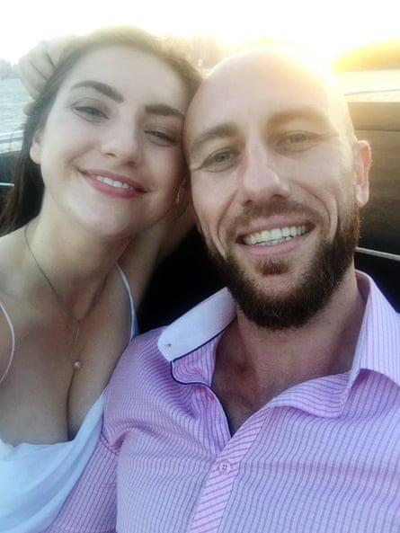
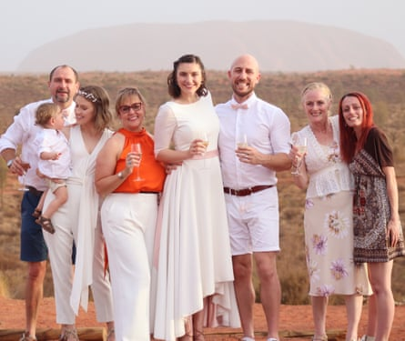

M oe and I met at an obstacle course race in south-western Sydney in 2015 when I was 21. He’s a naturally charismatic guy and, while I wasn’t immune to his charms, I didn’t think of him again until nearly a year later when I saw him on a dating app.
I swiped to say hello and he invited me to go rock climbing. I chickened out at the last minute but a few months later Moe joined the same gym as me. We became fast friends, regularly training and trail running together.
I was at university at the time, living with my parents and dating someone else. I loved spending time with Moe but didn’t register an inkling of romance between us. We slipped easily into a close friendship and were soon having dinner together a few nights a week.
Mariah and Moe in 2017
As my trust in our friendship deepened, I opened up to Moe about the problems in my relationship. At a dimly lit Indian restaurant in Liverpool on a cool autumn night I poured my heart out. My unhappiness felt like a shameful secret I’d been keeping from everyone, even myself, but I felt no judgment from Moe.
I have always had a tendency to get stuck in tricky feelings, becoming frozen by all the ways I could handle a situation. I hate the idea of getting things wrong. That evening Moe was so sage and understanding, all my misguided shame melted away. I could suddenly see a way forward. His ability to help me untangle myself is still one of the things I appreciate most about him.
That relationship ended not long afterwards and, while I was adamant Moe and I were strictly platonic, we were training and eating dinner together every day and bought puppies from the same litter. There were raised eyebrows among our friends and family, who assumed we were an item. I was in full-blown denial. I didn’t know what anyone was talking about – we were just mates!
In early October 2017 we wrapped up training as usual but, when Moe asked me to join him for dinner, his tone was different. The intensity of his voice and the look in his eyes ignited such nervousness in me that I turned his request down. But something had clicked, I knew I was on the precipice of a life-altering moment. I had to sleep on it.
Mariah and Moe on their wedding day at Uluru in 2020
The next night, in our sweaty gym clothes, we headed to a local Vietnamese spot. I was twitching with nerves and, as the meal ended, the whole scene started to feel like a romance novel. Out the front I could hardly look Moe in the eye and, as I made a move for my car, he reached out and pulled me close. When he looked at me I knew I was about to have the last first kiss of my life. It was incredible.
In a way nothing had changed but at the same time everything had. It was humbling to realise that everything we were was already there, I had just been oblivious to what it could become.
By Halloween I knew I’d marry him and our son was born a year later. As I battled through pre- and postnatal depression my default was to disappear into myself. That old shame came knocking again. But as usual Moe was the calming, reassuring presence I needed. When I revealed how unwell I truly was, it was his quiet, steady support that got us all through.
We were married in 2020, in an intimate ceremony at Uluru, and two years later made a tree change to Young, Australia’s cherry capital, with our son and our border collies, Banjo and Nina.
Even now, I still blush thinking about our first kiss.